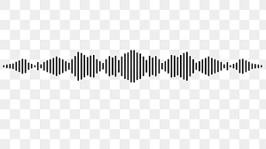

Lição1: Construindo Frases
Para essa aula, vamos aprender sobre palavras e frases. Aprender sobre palavras e frases é um passo importante na alfabetização,
cada nova palavra que aprendemos é uma ferramenta que nos ajuda a nos conectar com os outros e entender melhor
o mundo ao nosso redor. Segue como entender no áudio⬇️.

Depois de concluído, click no botão começar para a atividade prática
Obs: os textos sempre vão ter um áudio para ficar
mais claro para as pessoas com um conhecimento leve de escrita e leitura